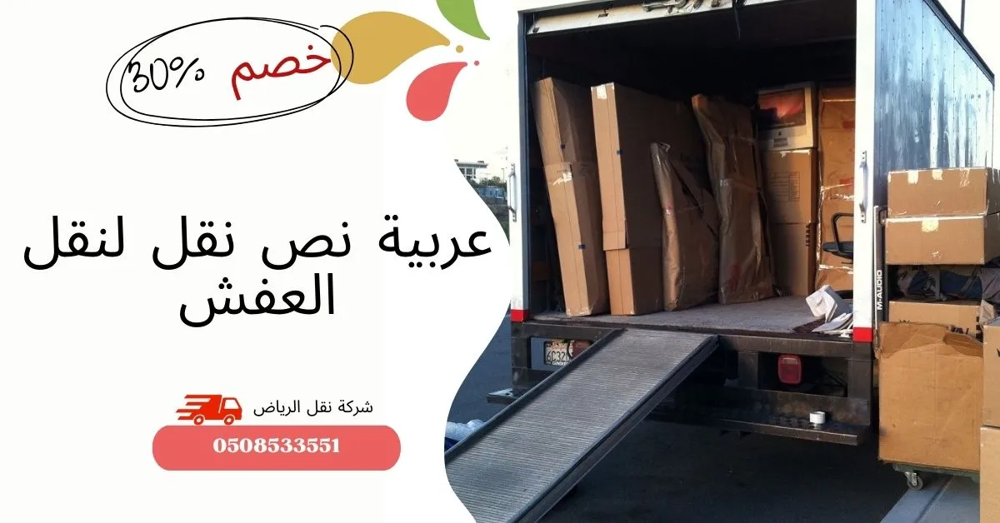

عربية نص نقل لنقل العفش

عند الحاجة إلى نقل الأثاث من مكان إلى آخر فإن عربية نص نقل لنقل العفش، واحدة من الحلول المثالية فهي توفر وسيلة نقل آمنة وفعالة لنقل الأثاث والممتلكات بأقل تكلفة وفي أسرع وقت، كما تعتمد هذه الخدمة على سيارات مجهزة خصيصًا لنقل عفش بالرياض مع الحرص على سلامة القطع وحمايتها من التلف أثناء التنقل، تعتبر خيارًا مريحًا لأولئك الذين يبحثون عن وسيلة مرنة وسهلة لنقل العفش.
عربية نص نقل لنقل العفش
تعد عربية نص نقل لنقل العفش الخيار الأمثل للعديد من الأشخاص، وخاصةً الذين يبحثون عن وسيلة اقتصادية لنقل الأثاث والممتلكات مع القدرة على تحميل كميات كبيرة من العفش، حيث توفر هذه الخدمة القدرة على حمل قطع الأثاث ذات الأحجام المختلفة مثل الأرائك والطاولات والأجهزة الكهربائية، كما يتميز هذا النوع من النقل بأنه يتسم بالمرونة، حيث يمكن تخصيص الخدمة لتناسب احتياجات العميل، مع تحديد وقت مناسب لتنفيذ النقل كما تتمثل أهم مزايا هذا الخيار في الأمان والكفاءة، حيث يتم تغليف الأثاث بشكل جيد لحمايته من الخدوش أو التلف أثناء عملية نقل العفش بين المدن السعودية، بالإضافة إلى عربات النقل الصغيرة التي تتميز بأنها أكثر قدرة على الوصول إلى الأماكن الضيقة، مما يسهل عملية النقل داخل الأحياء والشوارع الضيقة، بفضل أسعارها التنافسية، تقدم هذه الخدمة بديلاً مريحًا واقتصاديًا للعديد من العملاء.
عربية نص نقل جامبو
يعد اختيار عربية نص نقل لنقل العفش جامبو من الحلول المثالية التي تقدمها شركة نقل الرياض، فهي مصممة خصيصًا لتلبية احتياجات نقل الأثاث والممتلكات بكميات كبيرة وبطريقة منظمة وآمنة، فـ هي تتميز بقدرتها على استيعاب كميات ضخمة من الأثاث، مما يسهل نقل الأرائك والطاولات الكبيرة، وأجهزة المنزل الثقيلة، والأدوات المكتبية، وغيرها من الأغراض الكبيرة التي يصعب نقلها باستخدام وسائل نقل أخرى، كما تتوفر هذه العربات بتصاميم حديثة تضمن زيادة المساحة الفعالة للحمل، مما يساعد على تقليل عدد الرحلات، وبالتالي يوفر الوقت والجهد للعملاء بالإضافة إلى ذلك، توفر عربات نص نقل جامبو مستويات عالية من الأمان أثناء عملية النقل، حيث يتم تأمين الأثاث بشكل جيد باستخدام مواد حماية متخصصة، مما يضمن وصوله إلى وجهته دون أي تلف.
أهمية التعامل مع شركة نقل الرياض
- توفر شركة نقل الرياض سيارات نصف نقل وعربات نص نقل جامبو التي تتميز بسعة كبيرة، ما يجعلها مثالية لنقل الأثاث والممتلكات بكفاءة عالية.
- تتميز الخدمة بتقديم حلول شاملة للمشاكل المتعلقة بنقل الأثاث الثقيل والكبير الحجم.
- تقدم الشركة خدمات نقل آمنة واحترافية تضمن سلامة الأثاث أثناء التحميل والنقل.
- توفر الشركة أسعارًا تنافسية بالإضافة إلى خدمات ذات جودة عالية، مما يجعلها الخيار الأفضل للعملاء الذين يرغبون في خدمات نقل مريحة وآمنة.
سعر عربية نص نقل
عندما يتعلق الأمر بنقل الأثاث والممتلكات الكبيرة، فإن اختيار عربية نص نقل لنقل العفش، وخاصةً من شركة نقل الرياض يعد الخيار المثالي، حيث تتميز هذه العربات بقدرتها الكبيرة على استيعاب الأثاث ونقل الأغراض الضخمة بشكل مريح وآمن، كما تقدم شركة نقل الرياض العديد من العروض المميزة لعملائها عند الاستعانة بهذه الخدمة، مما يجعلها أكثر جاذبية للأشخاص الذين يبحثون عن حلول اقتصادية وفعالة، على سبيل المثال توفر الشركة خصومات متنوعة عند حجز خدمات النقل للاثاث مع الأسعار لفترات معينة أو في مناطق محددة، كما تقدم عروضًا خاصة للعملاء الذين يحتاجون إلى نقل أثاث بشكل دوري.
فـ من خلال هذه العروض، يمكن للعملاء الاستفادة من خدمات النقل بأسعار تنافسية وجودة عالية، مع ضمان حماية الأثاث من الأضرار أثناء عملية النقل إضافة إلى ذلك، تضمن الشركة تقديم خدمة مهنية وسريعة مما يضمن للعميل الراحة والطمأنينة طوال فترة التعامل، تقدم شركة نقل الرياض خيارات متنوعة وخدمات مرنة لتلبية احتياجات جميع العملاء.
رقم عربية نص نقل
تسعى شركة نقل الرياض من خلال سيارات نصف نقل لنقل العفش بالرياض لتقديم خدمات عالية الجودة وبأسعار تنافسية، كما يمكن للعملاء أيضًا التواصل مع الشركة عبر تطبيقات المراسلة مثل الواتس اب، مما يسهل عملية الحجز والاستفسار عن أي عروض خاصة أو خصومات تقدمها الشركة، بمجرد التواصل مع الشركة سيقوم فريق العمل بتحديد موعد النقل الأنسب لك وضمان توفير العربة التي تناسب حجم الأثاث، مع الحرص على ضمان سلامة ممتلكاتك أثناء النقل.
لذلك عندما تحتاج إلى نقل الأثاث أو الممتلكات الكبيرة عبر عربية نص نقل لنقل العفش، فإن شركة نقل الرياض توفر لك الحل الأمثل لتلبية هذه الاحتياجات، تقدم الشركة خدمات نقل فعالة وآمنة باستخدام عربات نقل متعددة الأحجام، بما في ذلك عربات نص نقل التي تتميز بالقدرة على استيعاب كميات كبيرة من الأثاث بسهولة، وبهذه الطريقة إذا كنت ترغب في التواصل مع شركة نقل الرياض للحصول على هذه الخدمة، يمكنك الاتصال بهم عبر الأرقام المخصصة لخدمة العملاء، حيث يقدمون لك كافة التفاصيل المتعلقة بالخدمة ومساعدتك في تحديد نوع العربة المناسبة لاحتياجاتك.
سيارة نقل عفش صغيرة
يعد اختيار سيارة نقل عفش صغيرة خيارًا مثاليًا للمسافات القصيرة، أو عند نقل كميات محدودة من الأثاث تتميز هذه السيارات بحجمها المناسب لعمليات النقل في الأماكن ذات المساحات المحدودة أو الطرق الضيقة، مما يسهل الوصول إلى الأماكن الصعبة، سواء كنت في حاجة لنقل بعض القطع الصغيرة أو الأثاث الخفيف، فإن السيارة الصغيرة توفر لك حلاً سريعًا ومرنًا.
تتميز سيارات النقل الصغيرة بالقدرة على المناورة بسهولة داخل المدينة أو الأحياء التي تتسم بالازدحام أو ضيق الطرق، كما توفر لك الأمان أثناء نقل الأثاث بسبب حجمها الذي يتناسب مع القطع المحدودة، مما يساعد على تقليل أي فرص لتلف الأثاث، شركة نقل الرياض تقدم هذه الخدمة بأسعار تنافسية، مع حرصها على توفير سيارات نظيفة ومعدة خصيصًا لنقل العفش بعناية.
تعتبر هذه السيارة مثالية أيضًا للأشخاص الذين ينقلون الأثاث بين الشقق أو المنازل الصغيرة.
تواصل معنا الأن عبر موقعنا الإلكتروني
عربية نص نقل بصندوق
تعتبر عربية نص نقل بصندوق خيارًا ممتازًا لنقل الأثاث والمعدات في المسافات المتوسطة والطويلة، حيث توفر مساحة واسعة وآمنة لنقل الأغراض، يتميز هذا النوع من العربات بوجود صندوق مغلق يوفر حماية كاملة للأثاث والمعدات أثناء عملية النقل، مما يمنع تعرضها للعوامل الجوية أو الأضرار التي قد تحدث أثناء الطريق كما أن وجود الصندوق يتيح تنظيم الأثاث بطريقة أكثر كفاءة، مما يساعد في توزيع الوزن بشكل متوازن.
مميزات عربية نص نقل لنقل العفش بصندوق
- حماية الأثاث: الصندوق المغلق يحمي الأثاث من الغبار والماء وأي ضرر قد يحدث أثناء النقل.
- القدرة على تحميل كميات كبيرة: توفر هذه العربات سعة تحميل كبيرة، مما يقلل من الحاجة إلى العديد من الرحلات.
- سهولة التنقل: تتمتع بقدرة عالية على المناورة داخل المدن أو الأحياء ذات الطرق الضيقة.
- الأمان: يساهم الصندوق في تأمين الأثاث بشكل جيد أثناء النقل، مما يقلل من احتمالية وقوع الحوادث.
الأسئلة الشائعة حول عربية نص نقل لنقل العفش
هل يمكنني استخدام عربية نص نقل لنقل الأثاث من أماكن ضيقة؟
نعم، تعتبر عربية نص نقل لنقل العفش مثالية للأماكن الضيقة حيث يمكن للعربة الوصول إلى مناطق يصعب الوصول إليها باستخدام الشاحنات الكبيرة.
هل يتم تأمين الأثاث أثناء النقل؟
نعم، يتم تأمين الأثاث بشكل جيد باستخدام مواد تغليف متينة للحفاظ على سلامة الممتلكات أثناء عملية النقل.
في الختام، تعتبر عربية نص نقل لنقل العفش خيارًا مثاليًا لأولئك الذين يحتاجون إلى نقل الأثاث أو أي ممتلكات أخرى بطريقة آمنة وفعالة، حيث تجمع هذه الخدمة بين السعر المناسب والجودة العالية في تقديم الخدمة، من خلال الاعتماد على شركات محترفة، يمكن للعملاء ضمان أن عملية النقل ستكون خالية من أي مشاكل أو تلفيات، وبفضل مرونتها في تحديد المواعيد ومسار النقل، تظل عربية نص نقل لنقل العفش الخيار الأكثر راحة وسهولة لمختلف العملاء.